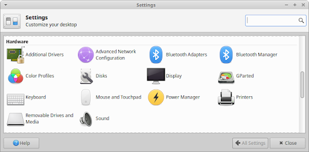
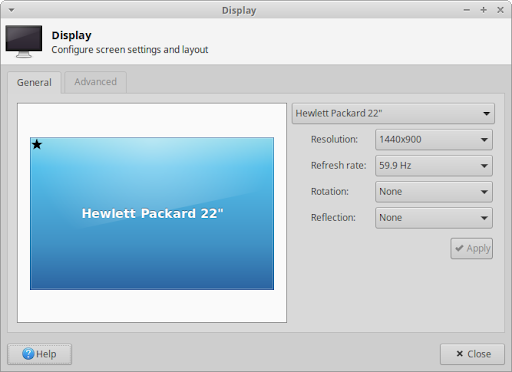
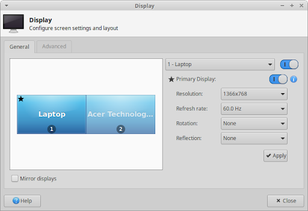
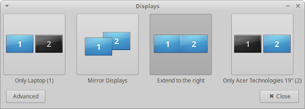
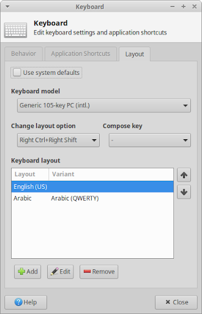
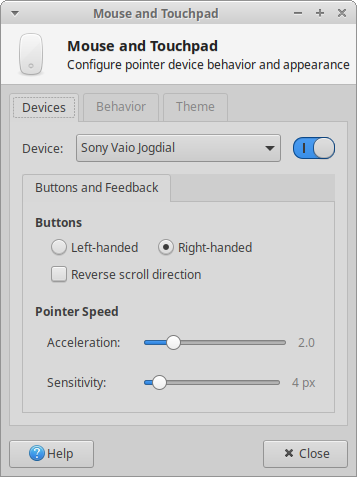
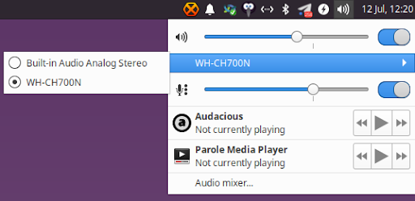
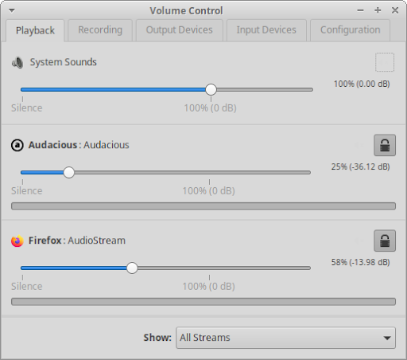
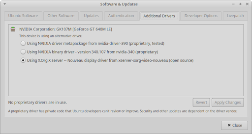

Table des matières
Votre ordinateur se compose d'un certain nombre de composants et de périphériques collectivement appelés matériel informatique. Cela inclut les composants internes, tels que le processeur, la carte mère, le disque dur, la carte graphique, la carte son, l'adaptateur Wi-Fi et l'adaptateur Bluetooth, ainsi que les périphériques externes, tels que le moniteur, la souris, le clavier et l'imprimante.
Xubuntu configure automatiquement votre matériel avec des paramètres par défaut optimaux, mais il peut arriver que vous deviez apporter des modifications à ces paramètres matériels. Cette section fournit des informations sur les outils permettant de les configurer, accessibles depuis la catégorie Matériel du  , ou la catégorie Paramètres du
, ou la catégorie Paramètres du  (Ctrl + Échap), et dans la Liste d'applications (Alt + F3).
(Ctrl + Échap), et dans la Liste d'applications (Alt + F3).

Que vous disposiez d'un seul écran ou de plusieurs moniteurs, vous pouvez facilement accéder à leurs options de personnalisation en ouvrant la boîte de dialogue de paramètres Affichage, également accessible avec le raccourci clavier Super + P.

Dans l'onglet Général, vous pouvez modifier la résolution, le taux de rafraîchissement, la rotation et la réflexion de l'écran dans les différentes listes déroulantes. Cliquez sur le bouton Appliquer pour essayer les modifications et une boîte de dialogue de confirmation apparaîtra pour vous permettre de confirmer ou de rejeter les modifications. La configuration précédente sera restaurée si vous ne confirmez pas ou ne rejetez pas les modifications dans les 10 secondes.
![[Note]](../../libs-common/images/note.png)
|
|
|
Remarque : pour modifier le rendu des polices ou définir une taille de texte DPI personnalisée, consultez les options de l'onglet Polices de la boîte de dialogue paramètres Apparence. Pour gérer les options d'économie d'énergie du moniteur, telles que le moment où il doit passer en mode d'économie d'énergie ou le degré de réduction de la luminosité après une inactivité (applicable uniquement aux ordinateurs portables), consultez les options dans l'onglet Affichage de la boîte de dialogue des paramètres Gestionnaire d'alimentation. Si vous rencontrez des déchirures d'écran lors de la lecture de vidéos, vous pouvez modifier la valeur vblank du compositeur ou modifier le fichier de configuration de xorg. |
Les écrans haute résolution peuvent nécessiter des paramètres spécifiques pour assurer la lisibilité du texte et d'autres objets à l'écran. Les écrans d'ordinateurs portables haut de gamme et autres écrans ultra haute résolution peuvent avoir une densité de pixels élevée dans un petit format. Ils sont communément appelés écrans HiDPI (High Dots Per Inch), 4K, UHD, WQHD, QHD ou 1440p. Certains ordinateurs portables dotés de ces types d'écrans incluent les MacBook avec « écran Retina », Dell XPS 13 et ThinkPad X1 Carbon. Les téléviseurs 4K et 8K UHD peuvent également nécessiter une personnalisation pour rendre le texte lisible aux distances de visualisation typiques de ces écrans.
Pour améliorer la visibilité du texte et des objets sur ces écrans à grande résolution, vous pouvez apporter les modifications suivantes.
Ouvrez la boîte de dialogue de paramètres Apparence, accédez à l'onglet Paramètres et modifiez la mise à l'échelle des fenêtres sur « 2x ».
Ouvrez la boîte de dialogue des paramètres du gestionnaire de fenêtres et dans l'onglet Style, passez à un thème HiDPI tel que « Default-hdpi » ou « Default-xhdpi ».
Lorsque vous disposez d'un moniteur externe ou d'un écran de télévision connecté à votre ordinateur portable ou de plusieurs moniteurs et/ou écrans connectés à votre bureau, davantage d'options deviendront visibles dans l'onglet Général de la boîte de dialogue Affichage du gestionnaire de paramètres. Sélectionnez l'écran dont vous souhaitez modifier les paramètres en le sélectionnant dans la zone d'aperçu ou en modifiant l'entrée dans la liste déroulante des écrans.

L'une des options supplémentaires présentées dans une configuration multi-écrans est la possibilité de réorganiser les affichages dans la zone d'aperçu en les faisant glisser et en les déposant pour qu'ils correspondent à la façon dont ils sont physiquement placés. Les options multi-écrans supplémentaires incluent la désactivation d'un écran, la définition d'un moniteur comme affichage principal, la mise en miroir du bureau sur plusieurs écrans ou l'extension du bureau sur les deux écrans.
|
|
|
|
Remarque : avec un écran défini comme affichage principal, vous pouvez ensuite configurer les panneaux, les icônes du bureau et les notifications pour qu'ils apparaissent sur cet écran. Cliquez sur l'icône d'information à côté du bouton bascule Affichage principal pour ouvrir les boîtes de dialogue de configuration respectives. |
L'onglet Avancé offre encore plus d'options multi-moniteurs, y compris la possibilité d'enregistrer une configuration d'affichage afin qu'elle puisse être facilement appliquée ultérieurement. Lorsque l'option Configurer les nouveaux écrans une fois connecté est activée, la mini boîte de dialogue Écrans ci-dessous apparaîtra, fournissant les configurations d'affichage les plus courantes, ainsi que toutes les configurations d'affichage enregistrées par l'utilisateur. Le raccourci clavier Super + P ouvrira cette boîte de dialogue dans une configuration multi-moniteurs et cliquer sur le bouton « Avancé » ouvrira la boîte de dialogue des paramètres d'affichage.

Le bouton Activer automatiquement les profils lorsque de nouveaux écrans sont connectés appliquera une configuration d'affichage enregistrée par l'utilisateur lorsque les écrans connectés correspondent aux écrans trouvés dans une configuration d'affichage enregistrée.
Pour les travaux sensibles aux couleurs, la boîte de dialogue de paramètres Profils de couleur vous permet d'installer et de gérer les profils de couleur pour vos écrans, imprimantes et scanners. Pour que les profils de couleurs puissent être utilisés, le démon requis devra être installé et exécuté en arrière-plan :
Pour calibrer votre écran, vous devrez installer DisplayCAL, GNOME Color Manager ( gnome-color-manager
gnome-color-manager redshift
redshift
Lors de l'installation de Xubuntu, des options permettant de sélectionner la langue et la disposition du clavier ont été présentées et appliquées. Afin d'apporter des modifications à ces options de clavier et à d'autres, ouvrez la boîte de dialogue de paramètres Clavier.

L'onglet Comportement fournit des options pour l'état de la touche Verr Num (en anglais : Num Lock), la vitesse et le délai de répétition des touches, ainsi que la vitesse de clignotement du curseur de texte. L'onglet Raccourcis d'applicationspermet de gérer les raccourcis clavier pour le lancement des applications. L'onglet Disposition propose des options pour sélectionner le modèle de clavier et gérer les langues et les dispositions du clavier. Avec plusieurs dispositions de clavier présentes, vous avez également la possibilité de définir un raccourci clavier pour parcourir les dispositions de clavier.
|
|
|
|
Remarque : Pour déterminer facilement quelle disposition de clavier est actuellement active et basculer entre elles, vous pouvez ajouter le plugin Dispositions de clavier au tableau de bord. Pour des raccourcis clavier supplémentaires non liés aux applications, consultez l'onglet Clavier de la boîte de dialogue des paramètres du Gestionnaire de fenêtres. Pour contrôler le comportement des différents boutons du clavier liés à l'alimentation, consultez l'onglet Général de la boîte de dialogue des paramètres de Gestionnaire d'alimentation. |
Les périphériques de pointage tels qu'une souris, un trackpad, une boule de commande ou une tablette graphique sont automatiquement détectés et configurés au démarrage ou lorsqu'ils sont branchés. Si vous souhaitez modifier les options et le comportement par défaut d'un périphérique, ouvrez la boîte de dialogue de paramètres Souris et pavé tactile.

L'onglet Périphérique vous permet de sélectionner chaque appareil individuel dans la liste déroulante Périphérique et d'ajuster leurs options individuelles. Cela inclut s'il est activé ou pas, ainsi que la disposition des boutons, la direction de défilement, la vitesse du pointeur et la sensibilité du pavé tactile. Si le périphérique sélectionné est un pavé tactile qui utilise le pilote Synaptics, un onglet Pavé tactile apparaîtra à côté de l'onglet Boutons et retour d'expérience avec des options pour activer et désactiver le pavé tactile pendant la saisie, appuyer pour cliquer, ainsi que le défilement sur les bords et à deux doigts. Un onglet Tablette apparaît lorsqu'un périphérique est détecté comme utilisant le pilote Wacom.
L'onglet Comportement contient des paramètres globaux qui affectent tous les dispositifs de pointage, y compris la sensibilité des opérations de glisser-déposer et de double-clic. L'onglet Thème vous permet de définir le thème du curseur.
Certains pavés tactiles sont parfois détectés comme étant des souris. Pour obtenir plus d'informations sur le pavé tactile, consultez le wiki francophone d'Ubuntu Touchpad.
Le son dans Xubuntu est traité via le serveur audio PulseAudio, capable d'effectuer des opérations avancées sur les données sonores entrant et sortant de vos périphériques matériels. La modification des préférences sonores peut être effectuée via les touches du clavier multimédia, le plugin audio dans la zone de notification du panneau ou la boîte de dialogue des paramètres de contrôle du volume PulseAudio.
Le plugin de son du tableau de bord vous donne un accès facile pour augmenter, diminuer et couper le volume des appareils, sélectionner parmi plusieurs périphériques d'entrée et/ou de sortie le cas échéant, ainsi que contrôler la lecture de divers lecteurs multimédias audio et vidéo. L'entrée Mixeur audio... en bas de la fenêtre contextuelle du plugin ouvrira la boîte de dialogue des paramètres de contrôle du volume PulseAudio.

Il est possible de régler le volume de sortie en utilisant la molette de la souris au-dessus de l'icône du plugin audio. Pour personnaliser si les touches multimédias sont activées, si une notification apparaît lorsque le volume de sortie est modifié et quels lecteurs multimédias apparaîtront dans la fenêtre contextuelle du plugin, cliquez avec le bouton droit sur le plugin audio.
La boîte de dialogue des paramètres PulseAudio contrôle du volume , qui se trouve dans la catégorie Multimédia du  , comporte plusieurs onglets pour afficher et configurer les paramètres sonores.
, comporte plusieurs onglets pour afficher et configurer les paramètres sonores.

Lecture - Vous pouvez régler le volume des sons du système, ainsi que définir le volume, la balance des canaux et le périphérique de sortie de chaque application en cours d'exécution.
Enregistrement - Répertorie les applications en cours d'enregistrement et permet le réglage du volume et du périphérique d'entrée.
Périphériques de sortie - Répertorie les périphériques de sortie audio et permet le réglage de leur source de sortie, de leur volume et de leur latence.
Périphériques d'entrée - Répertorie les périphériques d'entrée audio et permet le réglage de leur source d'entrée, de leur volume et de leur latence.
|
|
|
|
Remarque : pour activer les sons du système, ouvrez la boîte de dialogue de paramètres d'apparence, accédez à l'onglet paramètres et cochez « Activer les sons des événement ». Installez l'un des thèmes sonores, tels que FreeDesktop ( |
Un pilote de périphérique est un programme informatique qui contrôle un périphérique particulier connecté à un ordinateur. Il agit comme un pont pour permettre au système d'exploitation et aux autres logiciels de communiquer avec le matériel. Un pilote de périphérique est activé lorsque le périphérique est trouvé sur un ordinateur ou lorsque le périphérique est branché.
La plupart des pilotes de périphériques sont installés par défaut dans Xubuntu, donc tout devrait fonctionner automatiquement lorsque vous le branchez. Les pilotes de périphériques peuvent être open source ou propriétaires et sont fournis par le fabricant du matériel ou la communauté open source.
Xubuntu est une distribution Linux et la partie fondamentale du système d'exploitation est le noyau Linux. Le noyau Linux contient des milliers de pilotes de périphériques et la majorité d'entre eux sont open source, ce qui permet aux développeurs du noyau de les modifier. Pour mettre à jour ces pilotes open source, il vous suffit de mettre à jour le noyau Linux, qui est l'un des composants mis à jour via Gestionnaire de mises à jour.
Lorsque les fabricants de matériel ne publient pas suffisamment de détails techniques concernant leur matériel, il n'est pas possible de créer un pilote open source complet, de sorte que le matériel peut ne pas avoir de pilote open source ou avoir un pilote open source avec des fonctionnalités limitées. Certains pilotes open source font l'objet d'une ingénierie inverse pour fournir une alternative au pilote propriétaire du fabricant du matériel, mais ces fonctionnalités ne seront pas aussi complètes.
Certains fabricants de matériel ne fournissent pas de pilotes open source pour leur matériel, mais fournissent à la place un pilote propriétaire, également appelé pilote fermé ou blob binaire. Sans ces pilotes ou micrologiciels propriétaires, les composants et périphériques risquent de ne pas fonctionner correctement, voire pas du tout. Ces pilotes devront normalement être installés manuellement, car ils ne peuvent pas être inclus dans le noyau. Il s'agira principalement de pilotes pour cartes graphiques, d'adaptateurs sans fil et de micrologiciels de processeur, les plus courants étant :
Pilote graphique NVidia - Bien qu'il existe un pilote open source d'ingénierie inverse, appelé « Nouveau », il ne dispose pas de fonctionnalités de reclocking ni de gestion de l'alimentation pour le faire fonctionner de manière optimale pour les jeux et peut causer des problèmes sur les cartes existantes non prises en charge par la version actuelle du pilote.
Pilote graphique AMD - Le pilote open source « RadeonSI » est recommandé pour les jeux et un usage domestique général, tandis que le pilote propriétaire « AMDGPU-PRO » est recommandé pour les utilisateurs de postes de travail nécessitant des fonctionnalités non implémentées dans le pilote open source, principalement la prise en charge d'OpenCL 2.0.
Pilote sans fil Intel - Le pilote sans fil est open source mais nécessite un micrologiciel propriétaire pour fonctionner.
Pilote sans fil Broadcom - Le pilote sans fil est open source mais nécessite un micrologiciel propriétaire pour fonctionner.
AMD/Intel Microcode - Il s'agit de mises à jour de stabilité et de sécurité du micrologiciel du processeur et il est recommandé de les activer.
|
|
|
|
Remarque : Si vous avez coché la case « Installer un logiciel tiers pour le matériel graphique et Wi-Fi et les formats multimédias supplémentaires » lors de l'installation, les pilotes propriétaires requis seront automatiquement installés et activés. |
Pour afficher et gérer les périphériques propriétaires utilisés sur votre système, vous pouvez ouvrir Pilotes additionnels, ce qui ouvrira la boîte de dialogue de paramètres Logiciels et mises à jour vers l'onglet Pilotes supplémentaires.

Certains ordinateurs peuvent ne pas avoir de périphériques répertoriés, soit parce que les pilotes open source sont entièrement pris en charge, soit parce qu'il n'existe aucun pilote propriétaire pour les périphériques. Si des pilotes propriétaires sont répertoriés, vous aurez les options suivantes :
activez-les si l'appareil ne dispose pas actuellement d'un pilote open source.
basculer entre les pilotes open source et propriétaires.
basculer entre différentes versions du pilote propriétaire.
désactivez-les s'ils posent des problèmes ou si vous souhaitez simplement les désactiver.
|
|
|
|
Remarque : Les pilotes propriétaires sont stockés dans le référentiel de logiciels restreint. Si ce référentiel n'a pas été activé lors de l'installation, vous devrez l'activer pour voir les entrées répertoriées dans la boîte de dialogue. Vous pouvez le faire en passant par l'onglet Logiciel Ubuntu puis en cochant la case « Pilotes propriétaires pour les périphériques (restreints) ». |
|
|
|
|
Vous devrez être connecté à Internet pour installer les pilotes. Vous serez invité à saisir votre mot de passe lors du changement de pilote et devrez peut-être redémarrer votre ordinateur pour terminer l'activation ou la désactivation du pilote. |
|
|
|
|
Attention : Il sera généralement rare de trouver des pilotes de périphériques sur le site Web d'un fabricant de matériel. Si vous souhaitez installer un pilote manuellement, veuillez effectuer une sauvegarde de vos données et de votre système par mesure de précaution et veillez à suivre correctement les instructions. |
 |
 |
|
| Chapitre 6. Paramètres - Personnalisation |

|
Chapitre 8. Paramètres - Connectivité |